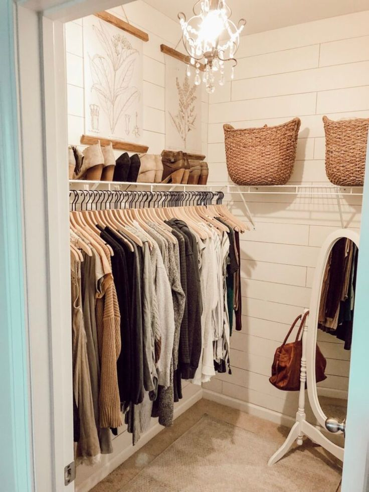

FitCheck
Built out of a desire to eliminate morning decision fatigue, FitCheck is an automated wardrobe companion that turns your actual closet into a dynamic outfit generator. Built with React Native and Flask, it pairs a custom YOLOv8 model for real-time item detection with generative AI prompting to analyze wardrobe inventory and synthesize complete, styled outfit recommendations in seconds.
